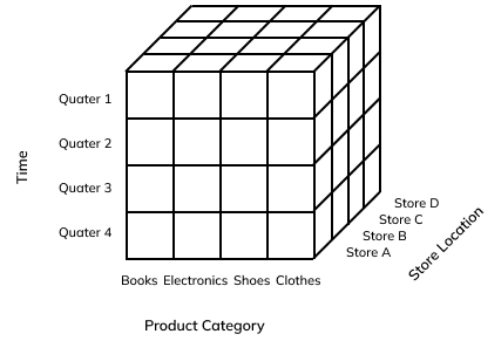

Decision Challenges
3 primary challenges that face managers when making decisions:
- Analyze large amounts of data/information
- Must make decision quickly (long time to go through data)
- Apply complex analysis techniques (data analysts can tell you what the data says, unbiased, clean up, produce reports/graphs to help you make decisions)
Types of Decisions
- Operational Level: involve employees, lower-level management, department managers. Done very frequently, day to day (ex: weekly schedule, reorder inv/products)
- Structured Decisions: operational decisions which are made frequently and are repetitive. Affect the short-term business strategy (called structured because they are made on a regular basis and already follow a process)
- Relies on Data/Information
- Managerial Level: made by mid-level managers (ex. Introducing a new product line)
- Semi-Structured Decisions: made less frequently and involve short-medium range plans (called semi-structured because there are few/no established processes to help you make a decision)
- Relies on Business Intelligence, Knowledge, Data
- Strategic Level: made by senior managers and executives (ex. opening/closing a branch, enter a new market, COVID related changes)
- Highly Unstructured Decisions: rare decisions, there are no procedures/rules that exist to guide these long term decisions
- Relies on Knowledge, and the rest
How MIS Supports Decision-Making
Data Capturing → Storing → Analyze/Make Decisions
- Operational Support Systems:
- Transactional Information/Data: consists of all the information within a single business process/unit (ex. Information collected at checkout, registering for a course, patient/health information)
- Online Transaction Processing (OLTP): capture transactions → cleaned → stored in a database (DB)
- Transaction Processing System (TPS): a basic business system that serves at the operational level and assists in structured decisions (ex. Process payroll - collect employee information [clock in/out], then TPS will analyze information and produces reports)
- Managerial Support Systems:
- Analytical Information: includes all organizational information that is used to support semi-structured decisions. Includes transactional information/data + market/industry information (ex. Trends, growth, introduce a new product or not - look at transactional data to study existing [what’s working/what's not] and look at the current industry/market)
- Online Analytical Processing (OLAP): a system that manipulates information to create business intelligence [Equivalent to OLTP]
- Decision Support System (DSS): Uses OLAP to help managers evaluate and choose the best decisions (ex. Streaming services - recommendations based on hours; genre; time; liked/disliked videos, insurance companies use to decide premium to charge customers)
- Executive/Strategic Support Systems:
- Executive Information System (EIS): a specialized DSS that supports unstructured decisions which are done for the long-term and non-routine. EIS requires data from external sources (ex. Competitors, local/international laws…) A common feature in EIS is the use of digital dashboards (visualizations, graphs, timelines…)
OLAP Cube: Access different information in different dimensions and make decisions

The more data you feed, the more accurate they become
Relies on Business Intelligence and Knowledge to help make decisions (all of the above)
DSS and EIS Integrate AI (Artificial Intelligence)
* AI has subsections, gets popular when new model/method is discovered
* AI depends on Data; feed into algorithm, learns, analyzes, helps make decisions
Supervised Machine Learning - give a sample of certain thing, ex 4, tell the AI this is what it means
Unsupervised Machine Learning - don't tell AI anything, let algorithm figure out patterns based on input data; input → BLACKBOX → output
LLM - language models (chatGPT, gemini…), context windows (limit of understanding, too much input), bias (garbage input, garbage output)
- Expert System: relies on a knowledge base and a set of rules to make decisions (feed data and provide rules and then EIS will make decisions)
- Neural Network: Input and output nodes that emulates the way the human brain works; input → BLACKBOX → output (positive/negative). Find hidden trends/patterns in the data and is self-taught
- Genetic Algorithm: based on theory of evolution. It will find the best solution for a problem that you have
Ex. healthcare industry - predict if patient is diagnosed with cancer based on test results, images, and medical history [a set of specified rules in the system])
A downside is that without the built in rules, the system is useless + needs to be continuously reprogrammed
Ex. Credit card company flagging a transaction as fraudulent
Goes through data to determine best combination
Can use AI, but should always have a human overlook; bias risk
- CVs (resumes) fed into system → AI → predict which should be hired
- Ex. Amazon “removed” gender bias; did not help because of hobbies (women’s basketball team)
- United Health removed race from applications; remained biased against black people (location)
Algorithms will find things you never thought about
Captchas (bot detection) use human feedback to train their AI systems (traffic lights [streetview], typing words [scanned books]) the more AI is trained, the higher accuracy